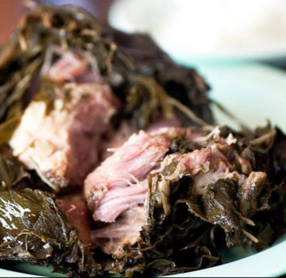

Pronunciation: "l-ow l-ow" ("ow" pronounced in the way of expressing pain)
Lau lau is a polynesian dish that consists of taro leaves and meat (pork and butterfish), wrapped in ti leaf
Traditionally it is cooked in an underground oven (an imu)
However, most people now steam it on the stove